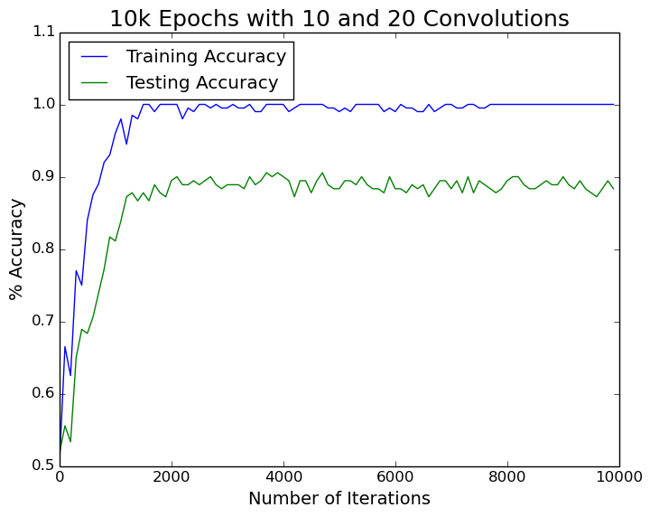
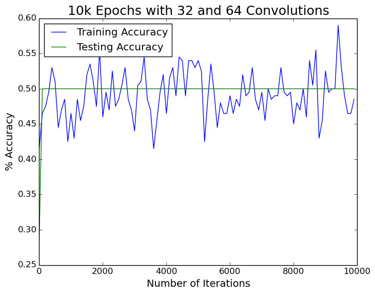
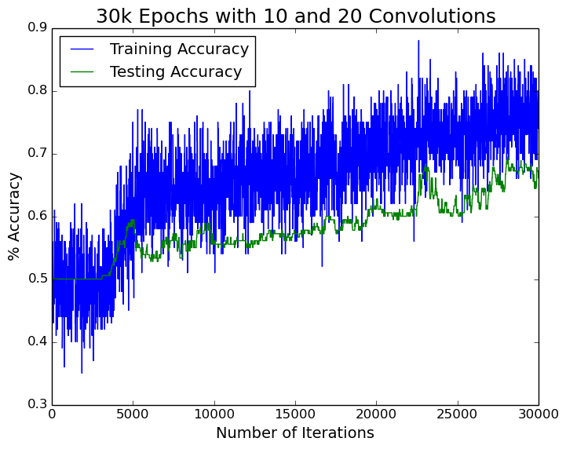
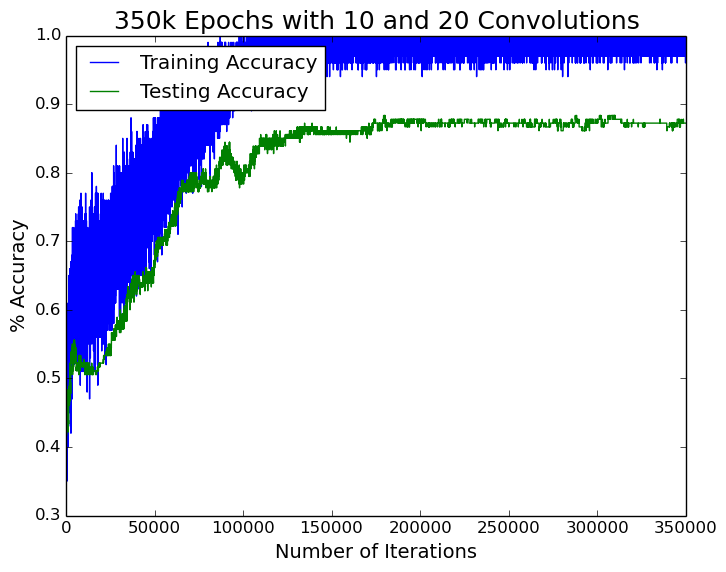
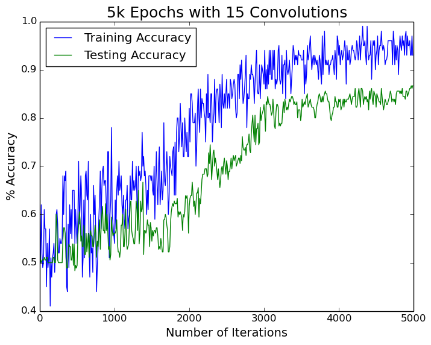

I just wanted to give a little update on how our the convolutional neural net is going. Overall, the answer is: slow but promising.
We (Josh and I) modified our visualization script which uses matplotlib to save off our graphs instead of just showing them each time we run the script. This post will mainly just be showing some of our graphs with a little blurb about what we did for each run.
Ideally, I'll be writing up something about our overall plan soon. I'll also be likely making a post touching base on how the transition was from Windows to Ubuntu for development. Those will be for another day.
Onto the data.
Our convolutional network script now takes most of the parameters as variables. The only thing hardcoded now is (1) the size of our convolution filters at each layer and (2) the size of pooling at each layer.
For these graphs, the filter size is a 5X5 pixel patch for the two convolution layers. We use a 2x2 max pooling after each convolution. We zero-pad our image before convolving, and as such the image only shrinks during the pooling phase. We used a batch size of 200 training images throughout these tests.
Our original input images are 128x128 pixels. They are fed in as gray-scale and have the shape 128x128x1. After the two layers of convolutions and poolings, we end up with 32x32 pixel filters which are fed into the softmax regression.
This first graph shows our cost over 10,000 iterations and took roughly 30 minutes to run. We had 10 convolution filters in the first layer and 20 in the second. The two lines show our training accuracy and our testing accuracy. The testing data was completely separate from the training. After every 100 epochs, we tested the weights on the random training batch set from that particular epoch in addition to the held-out testing images.
As you can see, at about 1500 iterations we get up to about 90% accuracy on the testing data and then plateau.
The next stop was to bump up the number of filters to 32 for the first layer and 64 for the second. We get the following:
As you can see, it did terribly. We hit a snag with this behavior for several hours. No matter what we tried, 10 filters and 20 filters seemed the only sweet spot. We double-checked all of our matrix dimension calculations thinking it was calculating something wrong somewhere. No matter what we did, our math looked good, but the output was ALWAYS guessing between our two classes (hence 50% accuracy) for our testing set, which was split evenly with our two classifications.
We re-ran the data, but this time bumped up the epochs to 30,000 and putting our filter count back to 10 and 20.
Here we finally have some meaningful data again. It still got stuck in the 50% guessing game for the first 4,000 iterations or so. It was unfortunately one of those 'we changed a lot of variables' situations where we didn't exactly know when we made it have this behavior. We looked in our git history but the only changes we made were real errors that needed correcting, plus some commenting. We started to just chalk up to possible faulty fitting or bad optimization with the Adam Optimizer. We started to decrease the learning rate to get a more gradual increase. This will obviously require us to train more iterations since it will be less aggressive with the changes made to the weights.
We decided to 'go big' and ran for 350,000 iterations. This took my 980 Ti overnight to finally finish training.
We finally had something that looks reasonable! With our algorithm looking pretty solid, it was time to start playing with different convolution settings.
This was only 5,000 iterations but each convolution had 15 filters.
That's all the graphs we've got for now.
We'll start playing with how convolution size and pooling size affects the performance. We'll also try to crank up the number of filters in our layers, and massively increase our iteration count to help get it out of the 50/50 rut.
The filter count fiasco could have been due to us only having two classifications. Increasing the number of filters just gave it too many weights that could affect the outcome for only two types of images. I've said images just to keep this general. We will likely have a post coming out soon going over our overall process and what images/classes/techniques we've done along the way.